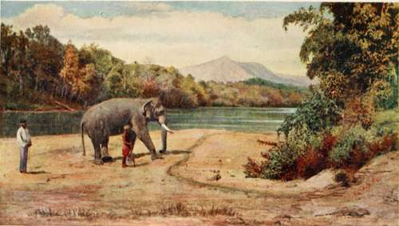

Chapter XVI. The East Coast
Description
This section is from the book "Ceylon", by Alfred Clark. Also available from Amazon: Ceylon.
Chapter XVI. The East Coast
Along the east coast stretch a number of shallow lagoons, some of which dry up during the hot season and become salt-encrusted plains. The largest of them is over thirty miles in length, and during the north-east monsoon becomes a fresh-water lake.
On an island in this lagoon is Batticaloa, the principal town on this side of the island, and inhabited entirely by Tamils and Moormen. It is very picturesquely situated, and boasts of a small fort, built by the Dutch two hundred years ago.
The lagoon teems with fish, and several curious methods of catching them are followed by the different fisher castes. Some employ long nets, into which they drive the fish by beating the sides of their canoes with sticks, producing a sonorous sound, audible for a great distance. Others use large dip-nets, into which fish are tempted by bait. Casting-nets are made much use of where the water is only a foot or two deep, and are thrown with great skill, the leaded fringe always falling on the surface in a wide circle. In the mangrove swamps, where rivers debouch into the lagoon and the water runs deep, men may be seen, perched on stands, shooting fish with bows and arrows.
At night dug-out canoes are paddled noiselessly about, with cressets of fire flaring over the bows, and fish, attracted and dazzled by the glare, are speared as they rise to the surface. Scores of men wade about in the shallows, each with a flaming torch in one hand, and a cone-shaped basket, open at both ends, in the other. On seeing a fish by the flare, the man claps his fishing-basket over it, and then, putting his hand in at the top, secures his prize.
One peculiarity of the lagoon is the " singing fish," to be heard chorusing on any still moonlight night. It is not known what fish or fishes produce the sounds heard, but the natives believe the " singers " to be a species of shellfish! Two sounds may be distinctly heard—one like the twanging of a harp, and the other like the croaking of a frog, neither very musical.
There are other curious fish in this district, such as the "climbing perch," little creatures a few inches long, which come out of the sea and move about among the rocks by means of their fins. They are popularly supposed to travel across country, and even to climb trees !
Several kinds of fish in Ceylon seem to have the power of burying themselves in the mud of pools when these dry up in the hot season, and of coming to life again, so to speak, when the rains begin some months later.
There are a large number of coconut estates along the coast, mostly owned by Europeans. Elephants are commonly used for the estate work, and may be seen drawing huge-wheeled carts laden with coconuts, bags of copra or piles of cadjans.
A Working Elephant.
A weird ceremony called "fire-walking" is performed in this district every year, in connection with a great heathen festival. A number of devotees walk one after another through a trench full of glowing red-hot embers, and are afterwards soundly castigated with long whips. The natives say that the men are never the worse for the ordeal !
Seventy miles north of Batticaloa is the world-famous harbour of Trincomalee. It is land-locked, with a narrow entrance, and its beauty is enhanced by several wooded islands. Two forts guard it, one —Fort Ostenburg—on a frowning cliff dominating the entrance, and the other—Fort Frederick—on a rocky promontory jutting into the sea on its eastern side. Immense sums were spent in strengthening these forts, but, a few years ago, they were practically dismantled and the garrison withdrawn.
On the summit of the cliff overhanging the sea at Fort Frederick is a stone monument with an inscription in Dutch on it, recording the fate which befell Francina Van Reede, daughter of the Commandant, over two hundred years ago. Her lover, a Dutch officer, whose period of foreign service had expired, repudiated his betrothment, and embarked for Europe, and the forsaken girl threw herself from the cliff* as the ship bearing away the man she loved disappeared in the distance.
Many kinds of beautiful shells are fished from the sea in the neighbourhood of Trincomalee, and are sold by the Moor hawkers in neat native-made baskets. A large kind of oyster, yielding very fine mother-of-pearl, is found in the Tamblegam lagoon, near the little town.
About five miles from Trincomalee is a village where there is a hot spring in which little fish may be seen swimming about !
Continue to: